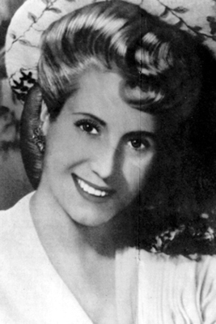

“Şiddete şiddetle cevap verilmeli. Bugün bizden bir kişi düşerse, yarın onlardan beş kişi düşmeli.”
Evita
Arjantin’in Buenos Aires eyaletine bağlı Los Toldos köyünde, Juan Duarte ve Juana Ibarguren’in gayrimeşru çocuğu olarak dünyaya geldiğinde, muhtemelen hiç kimse günün birinde önce ülkesine, ardından da dünyaya damgasını vuracağını tahmin etmemişti. Babası çiftçilik yapıyor ve resmi olarak evli olduğu kadınla yaşıyordu. Anne babasının durumu, Latin Amerika’nın bu efsane isminin doğum tarihine ilişkin karanlık noktalar bırakacaktı. Nüfus kaydında doğumu 7 Mayıs 1922, ismi de Maria Eva Duarte olarak belirtilirken, vaftiz belgesinde bu bilgiler 7 Mayıs 1919 ve Eva Maria Ibarguren olarak görünecekti. İlginçtir, ileride Evita olarak yayınlayacağı otobiyografisinde, kendisi de çocukluk dönemiyle ilgili hiçbir tarih, olay ve yer bilgisi vermeyecekti. Belki de bunların hiçbir önemi yoktu, sonuçta tarihe geçen, birkaç rakam değil, yaptıklarıydı.
O dönemde bölgede, Amerika kıtasına göç edenlerin, geldikleri yerlerde yerli kadınlarla evlenip, daha sonra keşifler devam ettikçe bu eşlerini geride bırakmaları sık rastlanan bir olaydı. Eva da bu yasak ilişkilerden birinin meyvesi olarak toprağa düşmüştü...
Eva bir yaşındayken, Juan Duarte onları terk etti. Geride, fakirliği yoldaş edinecek bir kadın ve beş çocuk bıraktı. Çaresiz kalan aile bireyleri, tek göz bir evde yaşıyor, temizliğe giderek hayata tutunmaya çalışıyorlardı. Eva’nın, Arjantin’in zengin ve toprak sahibi aileleriyle tanışması da gündelikçilik yaptığı bu dönemde olacaktı. Fakirlik zenginlik gibi kavramların, insanların yaşamları üzerinde ne kadar belirleyici olduğunu fark etmişti.
Babası öldüğünde cenazeye katılmalarına izin verilmemesi, Eva’yı derinden sarsmıştı. Zira o ve zavallı annesi, sınıf yapılanmasından dolayı, kâğıt üzerinde zaten yaşamıyorlardı bile! İşte Eva, Arjantin’in orta ve üst sınıflarından nefret etmeye; fakirler ve alt sınıflar için hayal kurmaya da bu dönemde başlayacaktı.
Annesi genç Eva’yı bir an evvel evlendirip bir boğazdan kurtulmanın hayallerini kurarken o, okuldaki tiyatro gösterilerinde ve konserlerde boy göstermeye başlamıştı. Yapmaktan en çok hoşlandığı şey de sinemaya gitmek ve Buenos Aires’ten gelen trenleri izlemekti. Ancak Eva, okulda ‘duygusal ve milliyetçi’ tınılar taşıyan bir oyunda küçük bir rol üstlendikten sonra kendisine ayrı bir yol çizmeye karar verdi. Artık büyük bir oyuncu olmayı hayal ediyordu. Magazin dergilerinden öğrendiğine göre de, yıldız olmanın yolu sadece Buenos Aires’ten geçiyordu.
Başkente gitmeye karar verdiğinde henüz 15 yaşındaydı. Parasız, ailesinin rızasını almadan yola düştü. İlk seferi hüsranla sonuçlanınca, tekrar annesinin yanına dönmek zorunda kaldı. Ama akacak kanın damarda durmaya niyeti yoktu. Kararlıydı; şeytanın bacağını kıracaktı. Bir süre sonra şansını bir kez daha denemek ve bir daha geri dönmemek üzere yeniden Buenos Aires’e gitti. Bu sefer kızının yanında olan Juana, onu bir radyo istasyonuna götürmüş ve kalacak bir yer ayarlamıştı.
Büyük Buhran’dan dolayı göç almakta olan Buenos Aires, bu dönemde çok kalabalıklaşmıştı. ‘Güney Amerika’nın Parisi olarak anılan şehrin merkezi, tıpkı Avrupa’da olduğu gibi kafeler, sinemalar, tiyatrolar ve restoranlarla doluydu. Ancak şehirde aynı zamanda işsizlik, fakirlik ve açlık da kol geziyordu.
Eva, Comedias Tiyatrosu’nda sergilenen ‘The Perezes Misses’ adlı oyunla profesyonel sahne yaşamına adım attı. Ertesi yıl bir gezici tiyatroyla turneye çıktı. Aynı zamanda model olarak çalışmaya ve ikinci sınıf melodramlarda küçük roller almaya başlamıştı. Candilejas adlı bir şirketle, günlük radyo oyunlarında yer almak üzere anlaştı. Bu oyunlar, o dönemde ülkenin en önemli radyosu olan Radio El Mundo’da yayınlanıyordu. Bir yıl sonra Radio Belgrano ile 5 yıllık sözleşme imzaladı. Bu anlaşmayla o dönemde çok popüler bir oyun olan ‘Great Women of History’deki (Tarihin Büyük Kadınları) yerini sağlamlaştırdı. Eva, oyunda İngiltere Kraliçesi I. Elizabeth’i, Sarah Bernhardt’ı ve Rusya’nın Son Çariçesi’ni canlandırıyordu. Kazandığı paralarla Radio El Mundo’ya ortak oldu. 1943’e gelindiğinde, ayda 6 bin pezo kazanıyordu ve bu gelir onu ülke genelinde en çok kazanan radyo sanatçısı yapmıştı.
Eva oyunculuk günlerinde
Film kariyeriyse çok kısa sürdü. Rol aldığı son filmlerden biri olan La Cabalgata del Circo’da, sinemanın büyük yıldızlarından Libertad Lamarque’nin oynadığı yaşlı bir kadına karşı düşmanlık besleyen bir köylü kızını canlandırıyordu. Lamarque ve Eva, ne filmde ne de çekimlerde yan yana geliyorlardı. Bir gün sette yemek yiyen Eva ve diğerleri, Lamarque’yi de yemeğe davet etti; ancak kadın “Hayır, teşekkür ederim. Kendi sınıfımdan olan kişilerin yanına gideceğim” dedi. Eva, bu aşağılamayı hayatı boyunca unutmadı. First lady olduğunda da Lamarque’yi kara listeye aldı. Lamarque, Meksika’ya kaçmak zorunda kaldı ve kariyerini orada devam ettirdi.
Juan Peron ile tanışıyor ve...
Eva’nın Evita olmasına giden yolda başrolü oynayacak olan Juan Peron, kendini bildi bileli askerdi. 1930 darbesinde küçük bir rol oynamış, Şili’de askeri ataşe olarak görev yapmış, uzun yıllar Avrupa’da kalmıştı. Arjantin’e döndüğünde Avrupa’nın gelecekte komünizm ve faşizm arasında tercih yapacağını düşünüyordu. Bu düşünce, Arjantin için yapacağı politik tercihi şekillendirecekti.
15 Ocak 1944’te Arjantin’in San Juan kentinde büyük bir deprem oldu. Altı bin kişinin öldüğü depremin ardından o dönemde Çalışma Bakanı olan Peron, kurbanlar için bir yardım fonu kurdu. Bağış toplamak için sanatçıları yardıma çağırdı. Bu organizasyondan bir hafta sonra düzenlenen galada, kampanyanın tüm katılımcıları buluştu.
Eva ile Juan ilk kez burada göz göze geleceklerdi. Eva, gelecekte kocası olacak Juan Peron’la tanıştığı bu geceyi ‘olağanüstü’ diye hatırlayacak; Peron ise Eva’nın görünüşünden ve sesinden çok etkilendiğini anlatacaktı. Bir süre sonra beraber yaşamaya başladılar. Ancak bu durum, politikacı ve sanatçıların bile ayrı sınıflara mensup sayıldığı Arjantin’de bir skandal olarak görüldü. Peron, Eva’yı sadece hayatına değil, siyasete de sokmuştu. Kabine toplantılarında onu yanına oturtuyordu. Lise eğitimini bile zor tamamlayan Eva, bakanlar ve komutanlarla aynı masada bulunuyordu. Lakin bu eğreti ilişki, asker Juan’ın rütbe almasına mani olacaktı. Sonunda ikili evlenmek zorunda kaldı.
Eva, eşiyle veya yardımcılarıyla hiç siyaset konuşmuyor ama duyduklarını teyp gibi kaydediyordu. Juan Peron bu durumu daha sonra yazdığı hatıratında şöyle açıklayacaktı: “Eva Duarte’yi bilerek çocuğum olarak seçtim ve onda ikinci bir ‘ben’ yarattım.” ‘Çocuğum’ demekte haksız da sayılmazdı hani. Tanıştıklarında Eva 24, Juan’sa 48 yaşındaydı.
Zamanla Eva, eşinin propaganda sorumlusu oldu! Bir radyo programıyla Juan Peron’un başarılarını drama tarzında aktarıyordu. Peron’un giderek artan gücü, ona Savaş Bakanlığı’na giden yolu açacaktı. Peron, hükümetin en güçlü bakanı olarak görülüyordu. Ama hiçbir başarı cezasız kalmazdı; kalmadı da. Juan, kabinedeki düşmanları tarafından saf dışı edilerek bir şekilde hapse atıldı. Halk, özellikle de onu bir kahraman gibi gören ve çoğunluğu oluşturan fakir kitle, hükümet binasını kuşattı.
Kalabalık, istediğini aldı. Juan Peron serbest kalmıştı. Peron, parlamento binasının balkonundan halkı selamlarken tüm bu kalabalığı organize eden Eva, mağrur bir edayla eşinin yanında duruyordu.
Eva’dan Evita’ya sıradışı bir kadın
Serbest bırakılmasının ardından, Peron’a cumhurbaşkanlığı yolu göründü. 1946’da gerçekleşen seçim kampanyasında Eva da rol aldı. Haftalık radyo programını kullanıp, özellikle fakir kesime hitap ederek, ateşli konuşmalarla kitleleri harekete geçiriyordu. Arjantin tarihinde, kocasıyla birlikte seçim kampanyasında boy gösteren ilk kadın oydu. Fakirlerin ve işçi sınıfının sevgilisi olmuştu. Bu dönemde Arjantin halkı ona Eva Peron yerine ‘Evita’ demeye başlayacaktı. Yani; küçük Eva...
Eva Peron, eşi Juan Peron’un geniş halk kitlelerinden
destek almasında ciddi bir rol oynuyordu.
Evita, 1947’de Avrupa turuna çıktı ve birçok devlet başkanıyla görüştü. Avrupa’ya, özellikle İspanya Kralı Franco ile görüşmek için gitmiş ve bu buluşma, her iki ülkede de büyük yankı uyandırmıştı. Arjantin, kıtada, Faşist İspanya ile diplomatik ilişkilerini sürdüren tek ülkeydi. Ancak bu dönemde İspanya BM’ye girmiş, Sovyetler Birliği ve Amerika ile ilişkilerini geliştirmişti. Bu yüzden, Juan Peron’un İspanya’yı ziyaret etmesi, İspanya’nın yeni müttefikleriyle ilişkilerini bozabilirdi. Bu görevi Evita üstlendi. Bir zamanlar temizlikçilik yapan ümitsiz genç kız gitmiş, yerine üst düzey diplomatik ilişkiler yürüten ihtiraslı bir kadın gelmişti.
Evita, İspanya’dayken monarşinin sembol isimlerinden Ferdinand ve Isabella’nın mezarlarını ziyaret etmiş, iç savaştan çıkmış ülkenin çocuklarına para dağıtmış; Franco da kendisine İspanya’nın en yüksek nişanını vermişti. Evita İtalya, Fransa, İngiltere ve İsviçre gibi ülkeleri ziyaret etti. Ancak İsviçre’deyken taşlandı, hatta kendisine domates fırlatıldı. Anlaşılan, bazıları, ‘demokrasi düşmanı’ bir ülkeye yapılan bu ziyaretinden hoşlanmamıştı. Bu dönemde Arjantin’de, Eva’nın İsviçre’ye banka hesabı açtırmak ve paralarını buraya yatırmak için gittiğine dair söylentiler de çıkmıştı.
Peron’un Avrupa gezisi, TIME dergisine de kapak olacaktı. Ancak dergi daha çok, Peron’un gayrimeşru bir çocuk olduğunu öne çıkarıyordu. Bu yüzden TIME, Juan Peron ve Evita 1951’de dergiye yeniden kapak olana kadar Arjantin’de yasaklandı.
Evita, Avrupa’dan döndüğünde görünümünde bir farklılık yaptı ve saçlarının rengini değiştirdi. Avrupa basını tarafından çok eleştirilen gösterişli elbiselerini ve şapkalarını bir kenara bıraktı. Artık kendisini daha ciddi gösteren elbiseler giymeyi tercih ediyordu.
Evita’nın halkının gönlünde taht kurmasını sağlayan, şüphesiz, kurduğu Eva Peron Vakfı’ydı. Bu vakıfla evsizlere ve fakirlere barınak, vatandaşlara da ücretsiz sağlık hizmeti verdi. Ülkenin fakir bölgelerine binden fazla okul inşa ettirdi. Evita, vakfın yanı sıra, ülkenin ilk kadın siyasi partisi olan Peroncu Kadınlar Partisi’ni de kurmuştu. Ülke genelinde 3 bin 600 şube açan partinin üye sayısı, 1952’ye gelindiğinde 500 bini bulmuştu. Evita, adeta tek başına bir devlet olmaya başlamıştı!
Bu partinin de verdiği destekle Juan Peron, 1952 seçimlerinde %63 oy aldı. Evita, kadınların da seçime katılmasını sağlamıştı ama feminist değildi. Kadınlar üzerinde çok büyük bir etkiye sahipti. Onun sayesinde partiye üye olan kadınlar, Arjantin’in siyaset arenasındaki ilk kadınlarıydı.

Arjantin’in efsanevi kahramanı Evita, First Lady’lik günlerinde
Juan Peron efsanesinin ardındaki gerçek isimdi
Evita, kocasının bir idol olmasına yardım etmişti. Onu Hz. İsa’ya benzetiyor; her Peroncunun gerekirse Peron için ölmeye hazır olması gerektiğini söylüyordu. Ona göre Juan’a yapılan eleştiriler, vatanseverlikle bağdaşmıyordu; sadece ona koşulsuzca bağlı olanlar gerçek Arjantinliydi. Ölçüyü kaçıran bu tavırları Evita’nın kendisini de bir idol haline getirmişti. Resimleri ve adı ülkenin her yerindeydi. Adını taşıyan bir şehir (Ciudad Evita) bile kurulmuştu. Ancak bu baskınlığına ve siyasi gücüne rağmen Evita, kocasının sembolik rolünün önüne geçmemeye dikkat ediyordu. Yaptığı her hareketin arkasında Peron olduğu veya Peron tarafından desteklendiği izlenimini veriyordu. Akıllıydı da...
Orduyu sinirlendiriyor
1951 yılında Evita’nın, cumhurbaşkanı yardımcılığına aday olabileceği konuşulmaya başlandı. Ancak giderek artmakta olan siyasi gücü, orduyu sinirlendiriyordu. “Her şeyin de bir sınırı vardı canım!” Anayasaya göre cumhurbaşkanının ölmesi halinde, yerine yardımcısı geçiyordu. Evita’nın cumhurbaşkanı olma ihtimali, ordunun kabul edeceği bir şey değildi; o başka bir sınıftan geliyordu! Ancak Evita, işçi sınıfından, sendikalardan ve partisinden büyük destek aldı. Hatta aldığı destek, kocası Peron’u bile şaşırtmıştı.
Milyonları meydana topladı
22 Ağustos 1951’de, işçi sendikaları, 2 milyondan fazla kişinin katıldığı ‘Cabildo Abierto’ adlı bir yürüyüş düzenledi. Cabildo Abierto, Arjantin’de 1810’da gerçekleşen Mayıs Devrimi’nden sonra kurulan ilk yerel hükümetin adıydı. Peron çifti, meydanda toplanan kalabalığa seslendi. Bu, Arjantin tarihinde bir kadın siyasetçiye destek olmak amacıyla toplanan en büyük kalabalıktı. Kitleler Evita’nın, cumhurbaşkanlığı yardımcılığına aday olmasını istiyordu. Eva, birkaç gün sonra kararını açıkladı. Aday olmayacaktı.
Halkın talebine kulaklarını tıkamış ve tek isteğinin, tarihin kocası için ayıracağı sayfada “halkın isteklerini ve umutlarını cumhurbaşkanına taşıyan kadın” olarak anılmak olduğunu söylemişti. Bu arada sağlığı alarm veriyordu; rahim kanseri olmuştu...
Arjantin’de, kadınların da oy kullandığı ilk seçim 1952 yılında yapıldı. Bu gelişmenin mimarı Evita’nın durumuysa gittikçe kötüleşiyordu. Kürkünün altında, ayakta durmasını sağlayan alçı ve tellerden yapılmış bir düzenek kullanıyordu.
Seçim zaferinin kesinleşmesinden sonra yapılan resmi kutlamalarda Evita’ya ‘Ulusun Ruhani Lideri’ unvanı verilecekti. İşler yolunda gidiyordu ama aynı şey genç kadının sağlığı için geçerli değildi. Rahmi alındığı halde, kanser Evita’nın bünyesini hızla kemiriyordu. Bu dönemde kemoterapiye giren ilk Arjantinli oldu.
Evita öldü; Arjantin durdu
Ölüm, onu yakalamakta da gecikmeyecekti. Hücreleri kansere tamamen teslim olunca, 26 Temmuz 1952’de, saat 20:27’de, henüz 33 yaşındayken öldü. Öldüğünde sadece 36 kiloydu. Haber bir anda yayıldı ve tüm ülke yasa büründü. Hayat durdu; sinemalar, restoranlar, kafeler kapandı. Evita için resmi tören düzenlendi ve hatırlamak kolay olsun diye ölüm saati kayıtlara 20:25 olarak geçti. Hükümet, her gün 5 dakikalık ‘yas saati’ ilan etti. İşçi dernekleri Papa’ya bir mektup yazarak Evita’nın ‘azizeler’ listesine alınmasını istedi. Ülkede adeta bir Evita histerisi yaşanıyordu. Kamu Sağlığı Bakanı, bakanlığa Eva’nın boyunda bir mum yerleştirdi ve mumun, her ayın 26’sında bir saat yakılması emrini verdi. Okullarda Evita’yı öven şiir veya düzyazı yazan öğrenciler ödüllendirildi. Bu arada Evita’ya hastalık yakıştırılamadığı için, “aslında o hasta değildi; öptüğü kişilerden hastalık kaptı” söylentisi revaç buldu.
Ordu ölüsünü de rahat bırakmadı
Evita’nın ölümünden kısa bir süre sonra, anısını yaşatmak için Özgürlük Heykeli’nden daha büyük bir anıt yapılması kararlaştırıldı. Heykelin dibinde, Lenin’in katafalkında olduğu gibi, Evita’nın cesedi sergilenecekti. Ancak bu anıt tamamlanmadan, 1955’te ordu yönetime el koydu. Juan Peron yurtdışına kaçmak zorunda kalınca, Evita’nın naaşını korumaya yönelik düzenlemeler sahipsiz kaldı. Artık Eva Peron’un naaşıyla, dirisini de hiç sevmeyen askerler ilgilenecekti.
Askeri yönetim, Evita’nın ölü bedenini, bulunduğu yerden kaldırarak, uzun yıllar gizli kalacak şekilde sakladı.
1955’ten 1971’e kadar Arjantin’de ‘Peronism’ yasağı uygulandı. Eva Peron’un resimlerini taşımak bir yana, ismini söylemek bile yasaklanmıştı. Ordu tam 16 yıl sonra, Evita’nın naaşının nerede olduğunu açıkladı: Arjantin halkının ulusal kahramanı, İtalya’nın Milan şehrinde ‘Maria Maggi’ adıyla gömülmüştü!
Evita’nın cenazesi İspanya’ya getirildi ve Juan Peron’un buradaki evinde koruma altına alındı. 1973’te sürgünden ülkesine dönen Juan Peron, üçüncü kez Cumhurbaşkanı seçilse de, bir yıl sonra öldü. Juan’ın Evita’nın ardından evlendiği Isabel Peron, yani Cumhurbaşkanı Yardımcısı, eşinin yerine geçerek ülkenin ilk kadın Cumhurbaşkanı oldu. Isabel, Evita’nın naaşını Arjantin’e getirtti ve Peronların naaşları birlikte sergilendi. Evita’nın mezarı, nükleer saldırıdan kurtulabilecek kadar sağlam inşa edilmişti! Kimilerine göre bu, naaşın tekrar kaybolması halinde efsanesinin yeniden ortaya çıkacağından endişe edenlerin fikriydi.
Eva Peron, hiç şüphe yok ki, kendisinin bile hayal edemediği bir noktaya gelmişti. Fakirler ve işçi sınıfı üzerindeki kişisel karizması ve kült halini almış kişiliğiyle, sosyalizm, faşizm ve milliyetçiliğin harmanlanmasıyla ortaya çıkan Peronizm akımının Arjantin’de kök salmasında başrol oynamış, bu akımın ve eşinin propaganda bakanı rolünü üstlenmişti. İyi niyetliydi. Gerçekten ülkesinde sınıf ayrımcılığını kaldırmak ve kitlelerin yaşam kalitesini yükseltmek istemişti. Bunda başarılı da oldu. Bugün başarısızlığı tescillenen ve diktatörlük payandası olarak işlev gören Peronizm, tarihin çöp sepetini boylamış olsa da, Evita’nın güneşi Latin Amerika semalarında ışıldamaya devam ediyor.
NOTLAR